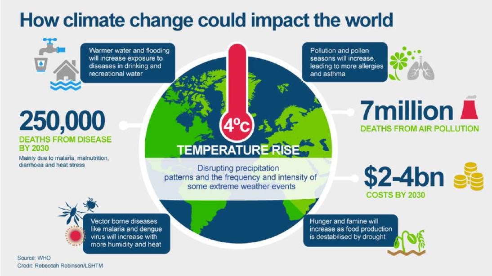

Threat: Climate Change
A hot topic!
Climate change is one of the biggest threats facing the planet and humanity.
Land and sea temperatures have been rising for over a century, speeding up in recent times to the highest on record. Glaciers are melting, sea levels rising… The climate can’t afford any more denial!
The world is already 1° C (1.8° F) hotter than it was between 1850 and 1900, the pre-industrial era.” By the end of this century, it could be anywhere between 1.4°C and 5°C higher. This will be very serious – not just for the environment but also for human health and well-being. 14 of the 15 hottest years since records began in 1850 have occurred since 2000, as rising carbon emissions continue to trap heat and drive climate change!
What is climate change?
Climate change refers to significant changes in global temperature, precipitation, wind patterns and other climate measures that occur over several decades or longer, due to an increase in greenhouse gases in the atmosphere as an indirect or direct result of human activities.
Now, what causes these greenhouse gases to increase? Well, since the industrial revolution approximately 150 years ago, human activities such as the burning of fossil fuels, industrial processes and deforestation, to name a few, have increased the concentration of greenhouse gases, contributing to observed climate change.
In its Fifth Assessment Report, the Intergovernmental
Panel on Climate Change, a group of 1,300 independent scientific experts from countries all over the world under the auspices of the United Nations, concluded there's a more than 95% probability that human activities over the past 50 years
have
warmed our planet.
What causes the dangerous increase in greenhouse gases that lead to climate change?
Carbon dioxide is one of the main greenhouse gases contributing to climate change.
- The burning of fossil fuels (gas, oil, coal) for gas in our cars, to turn on our lights and air conditioning at home, and also to desalinate our water, generates carbon dioxide.
- Deforestation - Forests absorb huge amounts of carbon dioxide – a greenhouse gas – from the air, and release oxygen back into it. When forests are destroyed for wood, palm oil and to clear the way for farmland, roads, oil mines, and dams, we lose nature’s way of regulating the amount of carbon in the atmosphere.
What does this all lead to?
The greenhouse gases cause the earth’s average temperature to increase, resulting in our climate changing and weather becoming more extreme and unpredictable. The change in climate is happening at such a fast pace, that it is possible that animals and plants will not be able to adapt fast enough and ultimately could be forced into extinction.
Different parts of the world will be affected differently. Some will have more rainfall, and some less.
"Temperatures will increase even more in some regions like the Gulf… Can you even imagine anything hotter than the long, boiling summers we already experience today?!"
Other potential future effects include a rise in sea levels, extreme and unpredictable weather like strong storms…the scare doesn’t end there.
Let’s look at the example of sea turtles to understand the threatening impacts of climate change. Sea turtles rely on nesting beaches to lay their eggs, many of which are threatened by rising sea levels.
Did you know that the temperature of nests determines whether the eggs are male or female?
Unfortunately, with temperatures on the rise, this could mean that many more females are born than males, threatening future turtle populations
The greenhouse gases cause the earth’s average temperature to increase, resulting in our climate changing and weather becoming more extreme and unpredictable. The change in climate is happening at such a fast pace, that it is possible that animals and plants will not be able to adapt fast enough and ultimately could be forced into extinction.
Different parts of the world will be affected differently. Some will have more rainfall, and some less.
"Temperatures will increase even more in some regions like the Gulf… Can you even imagine anything hotter than the long, boiling summers we already experience today?!"
Other potential future effects include a rise in sea levels, extreme and unpredictable weather like strong storms…the scare doesn’t end there.
Let’s look at the example of sea turtles to understand the threatening impacts of climate change. Sea turtles rely on nesting beaches to lay their eggs, many of which are threatened by rising sea levels.
Did you know that the temperature of nests determines whether the eggs are male or female?
Unfortunately, with temperatures on the rise, this could mean that many more females are born than males, threatening future turtle populations
Intergovernmental Panel on Climate Change
“Warming of the climate system is unequivocal, and since the 1950s, many of the observed changes are unprecedented over decades to millennia. The atmosphere and ocean have warmed, the amounts of snow and ice have diminished, and sea level has risen.
“Human influence on the climate system is clear, and recent anthropogenic emissions of greenhouse gases are the highest in history. Recent climate changes have had widespread impacts on human and natural systems.”
IPCC Fifth Assessment Report, Summary for Policymakers (2014)
As humans, we will feel the impacts too!
The food we eat relies on a specific climate. When the climate changes it can reduce our ability to grow food due to higher temperatures, increased rain, floods or droughts.
“Warming of the climate system is unequivocal, and since the 1950s, many of the observed changes are unprecedented over decades to millennia. The atmosphere and ocean have warmed, the amounts of snow and ice have diminished, and sea level has risen.
“Human influence on the climate system is clear, and recent anthropogenic emissions of greenhouse gases are the highest in history. Recent climate changes have had widespread impacts on human and natural systems.”
IPCC Fifth Assessment Report, Summary for Policymakers (2014)
As humans, we will feel the impacts too!
The food we eat relies on a specific climate. When the climate changes it can reduce our ability to grow food due to higher temperatures, increased rain, floods or droughts.

Think about it – things that we love to eat and drink, like coffee and chocolate, can be affected. All plants have a tolerance level of temperature and rainfall, so if it gets too hot or too cold, too wet or too dry, then our coffee
and cacao plants can’t survive!